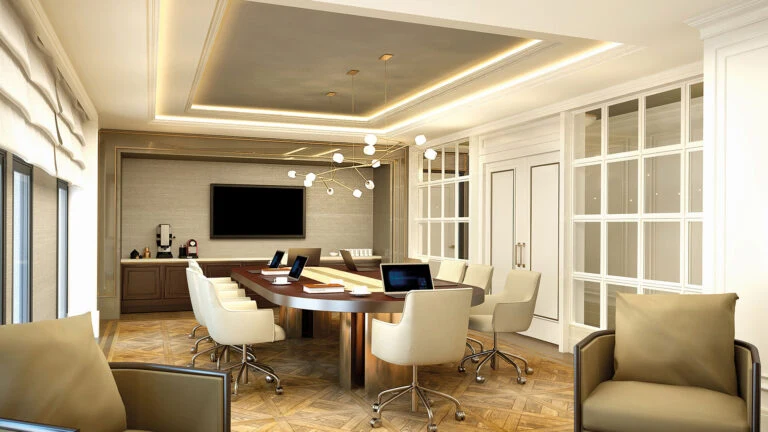

Taksim 360
A mixed-use development along Tarlabaşı Boulevard in Beyoğlu. Its low-rise streetscape brings residences, offices and commercial spaces together with the area’s historic architectural character.
Photo gallery

Official architectural illustrations; these images do not show the current construction condition.
Living spaces
The project combines residential streets, offices, shops, cafés and restaurants. The residential collection is presented separately from the hotel and office components.
Beyoğlu · Istanbul
Tarlabaşı Boulevard, Beyoğlu. Explore the routes to Taksim and the surrounding cultural and shopping streets during your visit.
Choose your home
Request the current apartment selection, price and payment options. Compare the exact unit, view and included services before arranging your purchase.